The slide of the lecture is on the left, the same figure or table on the right, computed in the browser from the same data. The ▶ button moves the parameter step by step; the tables and review problems are recomputed with it. Abbreviations: VaR (value at risk), ES (expected shortfall), HS (historical simulation), EWMA (exponentially weighted moving average), GARCH (generalised autoregressive conditional heteroskedasticity), IGARCH (integrated GARCH), ML (maximum likelihood), ACF (autocorrelation function), VR (variance ratio), JB (Jarque–Bera), R/S (rescaled range), MDD (maximum drawdown), CAGR (compound annual growth rate), SE (standard error), CI (confidence interval), LR (likelihood ratio), GBM (geometric Brownian motion), TPR (true positive rate), FPR (false positive rate), AUC (area under the ROC curve), EL (expected loss), PD (probability of default), LGD (loss given default), EAD (exposure at default), CoVaR (the VaR of the system conditional on an institution), ΔCoVaR (the institution’s contribution to CoVaR), BET (the index of the Bucharest Stock Exchange), i.i.d. (independent and identically distributed).
The Course Map · Chapters 0–3: Data, Returns and Distributions · Chapters 8–11: Volatility, Risk and Memory · The Exam
The Course Map
S&P 500, BET and Bitcoin over a Common Period
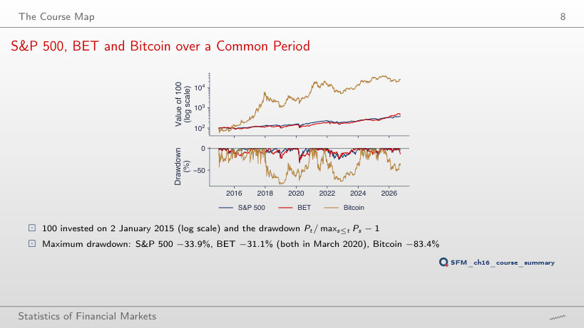
Answer
Only Bitcoin’s: −76.6% (from 8 November 2021 to 21 November 2022) instead of −83.4% (December 2017 – December 2018). The S&P 500 (−33.9%) and the BET (−31.1%) keep their trough of 23 March 2020, which stays in the window. The maximum drawdown depends on the sample: it measures the largest fall observed, not a fixed property of the asset.
Summary Table of the Course
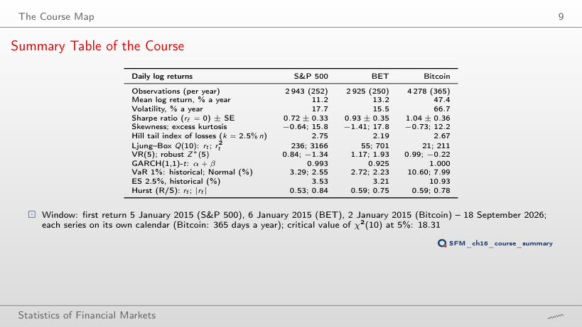
Daily log returns on the chosen window (the table of the slide for January 2015)
Answer
No: Q(10) = 9.1 < 18.31 (p = 0.52), against 236 on the window from 2015, while on rₜ² it stays at 291. The large statistic of the table comes largely from the days of March 2020, when large returns of opposite signs followed each other (ρ̂₁ = −0.13); volatility clustering shows in every window.
Interpreting the Table
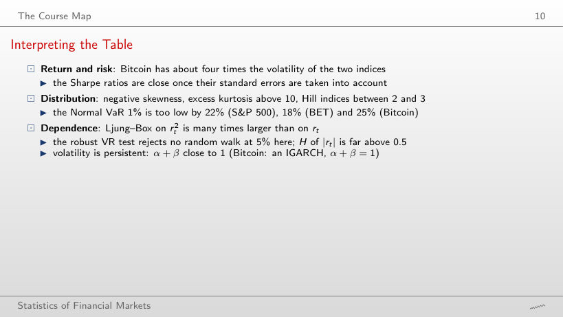
Answer
No: at 5% the Normal VaR is too high, by 7.8% (S&P 500: 1.79% against 1.66%), 13.1% (BET) and 6.4% (Bitcoin). The return distribution has more mass in the centre and in the far tails than the Normal distribution with the same variance, so the two quantiles cross between 1% and 5% (at 2.5% the BET difference is −0.5%). The Normal VaR understates risk exactly at the small levels used in regulation.
Stylised Facts: ACF of Returns and Absolute Returns
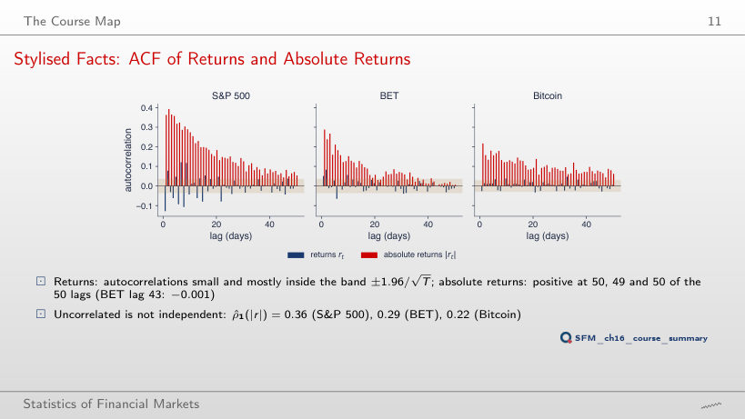
Answer
It falls to 0.16 from 0.36, because the days of March 2020 left the sample; all 50 autocorrelations of |r| stay positive. The size of the autocorrelation depends on the crises in the window, its persistent positive sign does not.
Chapters 0–3: Data, Returns and Distributions
Chapter 1: Data, Returns and Indicators (2/2)
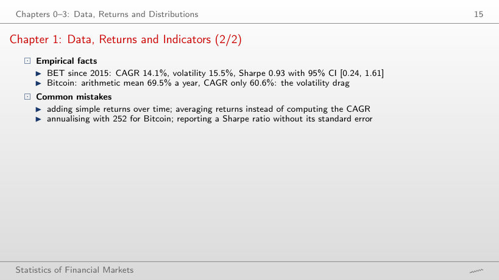
Answer
The S&P 500 (0.85, CI [−0.10, 1.81]) and Bitcoin (0.60, CI [−0.29, 1.49]); the BET (1.53, CI [0.32, 2.74]) does not. With about 5.7 years of data the standard error √((1 + SR²/2)/Y) is close to 0.5: even a Sharpe ratio of 0.85 is not separated from zero.
Chapter 3: α-Stable Distributions (2/2)
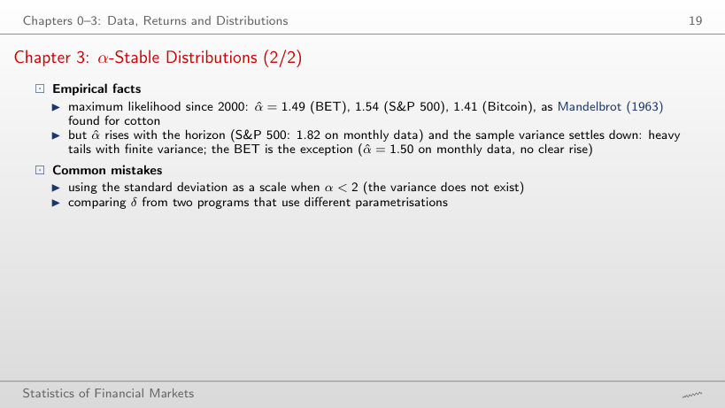
Answer
Not clearly: 1.49 daily, 1.56 weekly, 1.50 monthly, and the monthly interval [1.33, 1.67] is wide; the BET is the exception of the slide. The running sample variance of the BET still falls from 3.32 (2010) to 1.96 (2026) and settles down, as a finite variance does. For Bitcoin the monthly α̂ reaches the bound α = 2.
Chapters 8–11: Volatility, Risk and Memory
VaR 1% Forecasts of the BET: Historical Simulation and EWMA-Normal
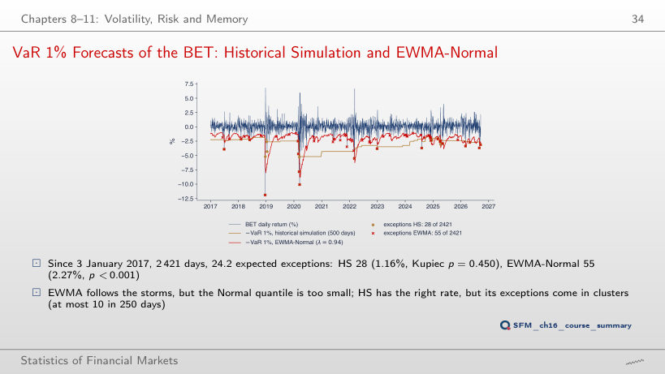
Answer
No: 38 exceptions (1.57%, 24.2 expected), LR = 6.76, p = 0.009. With 250 days the VaR 1% is the third smallest value of the window, so the tail is estimated from very few observations; with 500 days there are 28 exceptions (p = 0.450), with 750 days 26.
The Exam
Problem 1: Solution
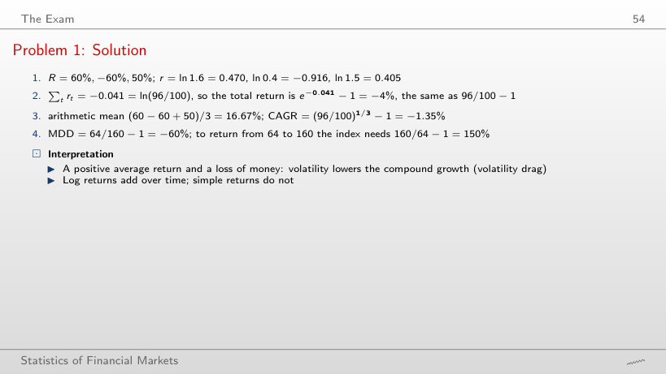
Review problem: returns and drawdown
Answer
It stays −1.35%: the CAGR depends only on the first and the last value, (96/100)^(1/3) − 1. The arithmetic mean changes, (60 − 25 − 20)/3 = 5.00%, and so does the maximum drawdown, 96/160 − 1 = −40%.
Problem 2: Solution
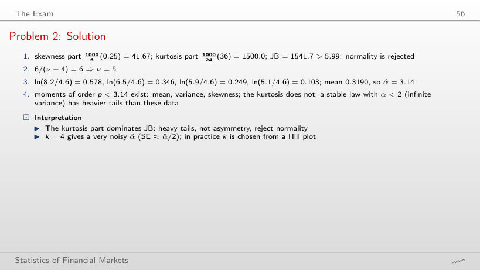
Review problem: distribution and tails
Answer
It falls to a quarter: 1000/24 × 9 = 375 against 1500, because K enters squared; JB = 41.67 + 375 = 416.7, still far above 5.99. The degrees of freedom of the Student-t distribution with the same K rise to ν = 4 + 6/3 = 6.
Problem 3: Solution
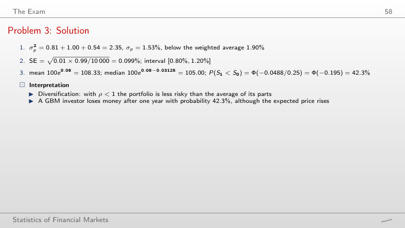
Review problem: portfolio, Monte Carlo and GBM
Answer
0.10%: σp² = 0.81 + 1.00 − 1.80 = 0.01. With ρ = −1 the risk does not vanish completely, because the two positions do not offset exactly: 0.6 × 1.5 = 0.9 against 0.4 × 2.5 = 1.0. At ρ = 1, σp = 1.90%, equal to the weighted average.
Problem 4: Solution
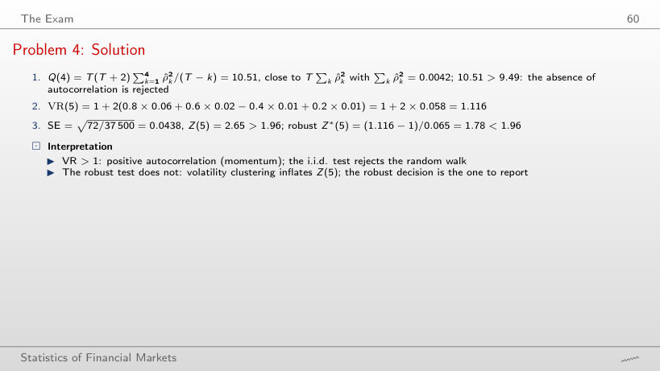
Review problem: autocorrelation and the variance ratio
Answer
Yes: VR(5) = 1 + 2 × 0.082 = 1.164 and Z*(5) = 0.164/0.065 = 2.52 > 1.96 (Z(5) = 3.74, Q(4) = 21.78). With ρ̂(1) = 0.06 the choice of test decided the outcome; here the autocorrelation is large enough to be rejected with the robust standard error too.
Problem 5: Solution
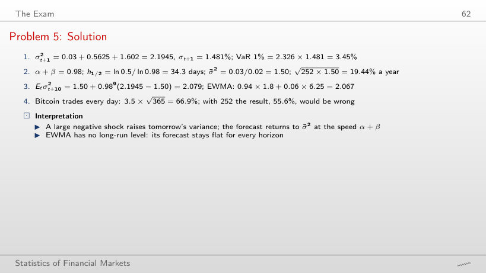
Review problem: volatility forecasts
Answer
Still 2.1945: GARCH(1,1) uses ε², so a gain and a loss of the same size raise the variance alike. Asymmetry (the leverage effect) needs models such as GJR or EGARCH.
Problem 6: Solution
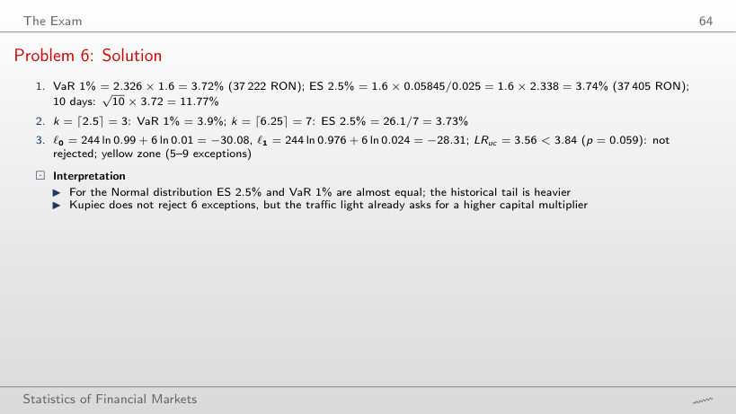
Review problem: VaR, ES and backtesting
Answer
The yellow zone, from 5 exceptions; as the exceptions grow, the Kupiec test rejects only from 7 (LR = 5.50, p = 0.019; with 6, LR = 3.56 and p = 0.059). In 250 days the test has little power, which is why the Basel traffic light penalises earlier. The test also rejects at 0 exceptions (LR = 5.03): too few exceptions point to a VaR that is too cautious.
Problem 7: Solution
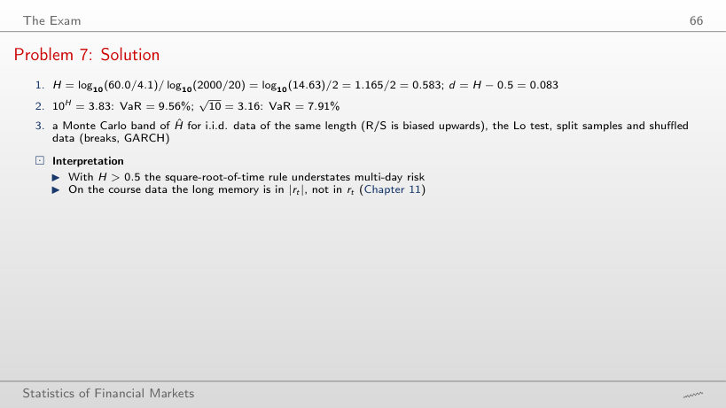
Review problem: long memory and risk scaling
Answer
No: H = log₁₀(40/4.1)/2 = 0.495 < 0.5, so 10^H = 3.12 and VaR = 7.81%, slightly below 7.91% with √10. The slope decides, not the growth of R/S with n: R/S grows for data without memory as well, with exponent 0.5.
Problem 8: Solution
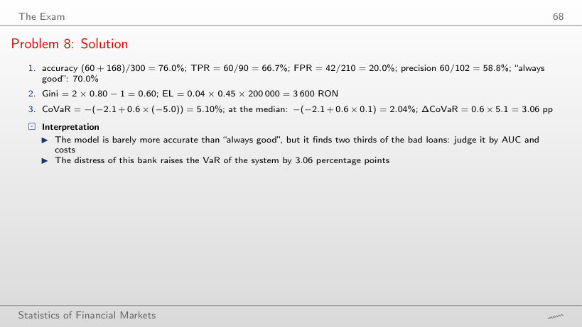
Review problem: credit scoring and systemic risk
Answer
The TPR, 60/90 = 66.7%: it involves only the bad loans. The accuracy falls to (60 + 90)/300 = 50%, below the rule “always good” (70%), the FPR rises to 57.1% and the precision falls to 60/180 = 33.3%.
Course data in data/market (up to 18 September 2026): daily closes of the S&P 500 and the BET since January 2000 and of Bitcoin since September 2014. The browser cuts the window and recomputes the returns, the performance measures, the moments, the Hill index, the ACF, the Ljung–Box and VR tests, VaR and ES, the Hurst exponent, the running sample variance, the VaR 1% forecasts and the Kupiec test. The GARCH(1,1)-t estimates come from the code of the chapter (Quantlets/Ch_16), the ML estimates of the stable α at three horizons from Chapter 3 (Quantlets/Ch_03). Other windows, levels α, historical-simulation windows and values of λ are extra runs of the same code. The review problems start from the numbers of the slides.